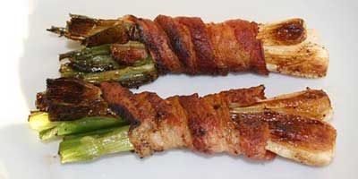

Forårsløg med bacon

Ingredienser:
- 6 forårsløg
- 2 skiver bacon
- lidt olie eller smør
Sådan gør du:
- Skyl forårsløgene og skær de nederste rødder af.
- Saml 3 forårsløg ad gangen i bundter og vikl en skive bacon omkring.
- Steg bundterne på panden i lidt olie eller smør til baconen er gylden og sprød.
Opskriften er taget fra: Web opskrifter